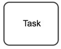
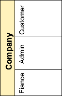

Chapter 2 BUSINESS SOFTWARE MODELS
This chapter will explore some common approaches to model the network of interactions that occur for business processes. These models not only help to provide deeper understanding of the nature of a business process but can facilating the development of systems to collect and analyze the data associated with the process.
2.1 Business Process Model (BPM)
There are many good reasons for using BPMN to model business processes. (Camunda Corporation 2018b)
Recognized Standard: BPMN is owned by an institution and is supported by many software products. Third party BPMN editors are available in the form of desktop apps like yEd (yWorks 2018) or online services like Camunda. (Camunda Corporation 2018a)
Simplicity: BPMN is based on a system of graphic symbols that easy to learn.
Power of expression: BPMN reduces descriptions of complex process work flows to a graphic model that is easy to grasp.
Implementation in IT: BPMN was developed to support technical implementation of processes (“Process Automation”). The more important IT becomes in a company, the more helpful BPMN can be, especially when process changes can be accomplished by a simple change of line.
A simple example
The idea of a BPMN model is to model a process from the beginning to the end.
A simple process
Naming conventions help to improve the readability of the process:
Tasks: described as a [verb] + [object]: Acquire groceries is better than first take care of shopping for groceries
Events: should be described as something that has already happened hunger noticed is better when I begin to feel hungry
2.2 Notation
| Symbol | Description |
|---|---|
| Start Event: Start of the process chain | |
| End Event: The end of the process chain | |
| Event Message Catch: wait for a message event | |
| Event Message Throw: sending a message event | |
|  | Task: Work to be done |
| XOR Gateway: choice of a action stream | |
| Parallel Gateway: initiate simulataneous action stream | |
|  | Swim lanes: separate the process by roles or actors |
References
Camunda Corporation. 2018a. “BPMN Editor.” https://camunda.com.
Camunda Corporation. 2018b. “BPMN Tutorial.” https://camunda.com/bpmn.
yWorks. 2018. “YEd Graph Editor.” https://www.yworks.com/products/yed?